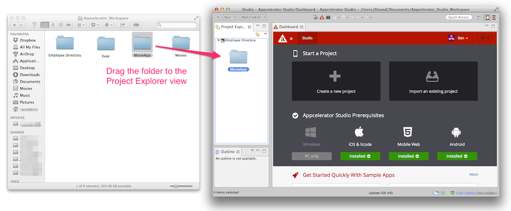

Importing an Existing Project
This page describes how to import a project into Studio.
Introduction
You can import an existing set of files into Studio by creating a new project and pointing Studio to the home directory for your existing project.
Using the import wizard
To import an existing project into Studio, from menu bar, select File > Import to open the Import Wizard.
For a Titanium Classic or Alloy application:
-
Select Appcelerator > Existing Mobile Project, then click Next.
-
In the Project directory text field, browse to the directory that contains your project.
-
You can optionally change the name of the project or copy the files to your current workspace. If you do not copy the files, the project will remain in its directory but linked to the current workspace.
-
Click Finish.
For a Github project:
-
Select Git and either select:
-
Fork Github Repository to fork and clone a Github repo.
-
Git Repository as New Project to clone a Github repo.
-
-
Enter your Github credentials, then click Validate.
-
If you are forking a repo, enter the owner's name and repo name in the Owner and Repository Name fields, respectively.
-
If you are not forking a repo, select the Github repo or enter the Git URI to the repo.
-
In the Destination text field, enter a path to an empty directory to clone the repo.
-
Click Finish.
For a Native Module, API Builder, API Runtime Services or other Web projects:
-
Select General > Existing Folder as New Project, then click Next.
-
In the Select directory text field, browse to the directory that contains your project.
-
In the Project Name text field, enter a name your project.
-
Choose the natures for your project.
-
Click Finish.
Using drag and drop
Starting with Studio 4.1.0, you can drag a project directory, previously created with either Eclipse or Studio, and drop it to the Project Explorer view to import the project to Studio and add it to your current workspace. Note that the files are not copied to the new workspace directory. Studio only links to the project directory.

Using promote to project
Promoting a directory to a project allow you to take any directory on disk and convert it into a project. You will see the project in your workspace, but the files live on disk in the former spot.
-
Open the Project Explorer view.
-
Expand the local filesystem node to the directory in question.
-
Choose Promote to Project.
-
Name your project appropriately and click OK.
-
Depending on the type of project, you may need to change the "natures" associated with the project. See below.
Changing project type
You may also want to change the "type" of your project.